—— V5 · 原创长篇 ——
零号漏洞
第三章：蜜罐
↓ 向下滑动开始阅读 ↓
凌 晨 · 真 相
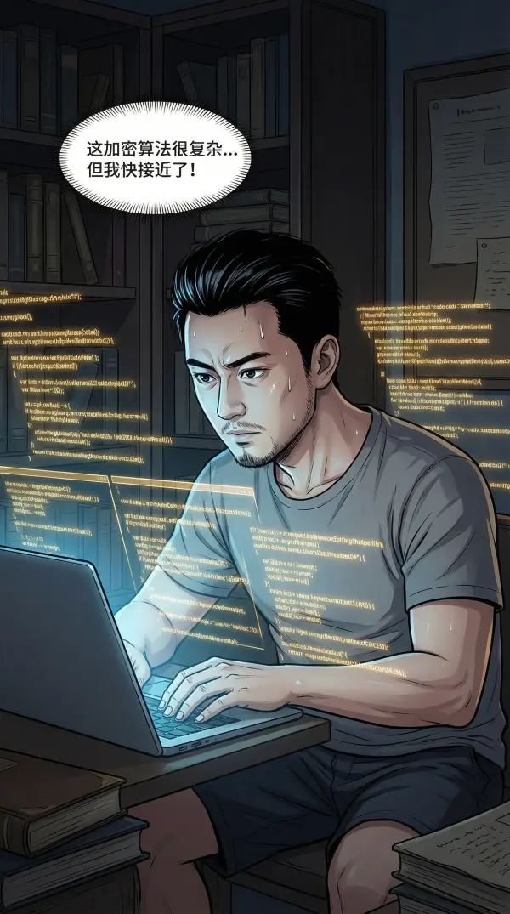
凌晨两点。书房里只有屏幕的蓝光。
我盯着白天截取的蚕蛹加密通讯界面，深吸一口气——触发代码视界。加密协议像洋葱一样层层浮现……这不是普通的AES-256。
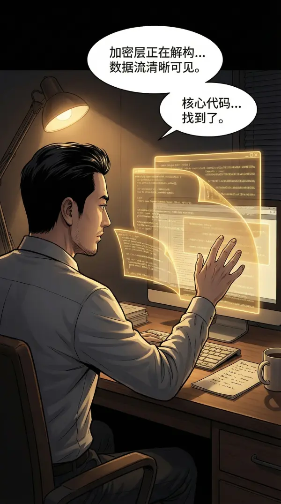
金色的数据流在空气中展开，像是翻开一本用光写成的书。
每一层加密都有独特的"手感"——这不是程序生成的。是手工编织的。一针一线，小心翼翼。
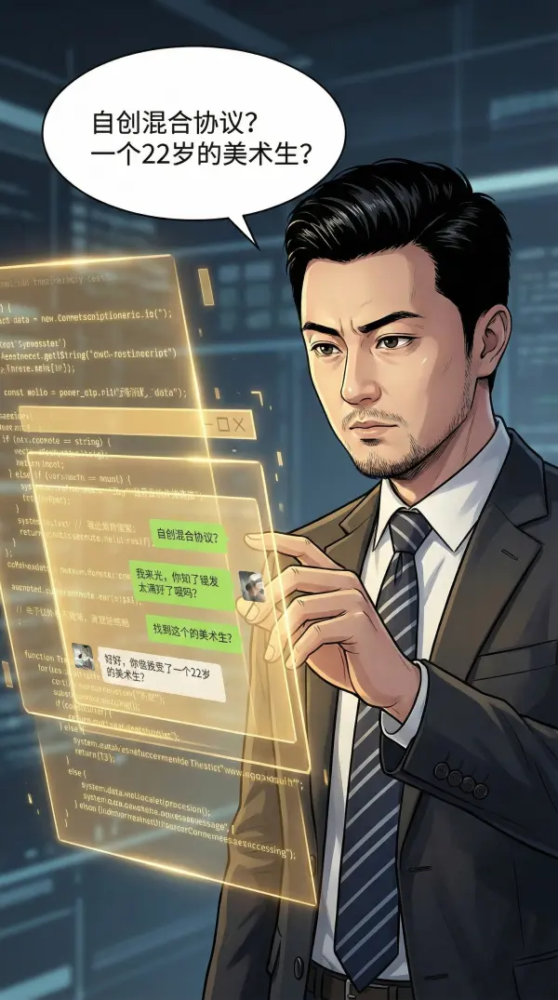
"自创混合协议？"
我皱眉。能写出这种级别加密的人，至少得有十年密码学功底。可蚕蛹的资料上写的是：22岁，美术生。
花了一个小时，最后一层剥开。
通讯内容浮现——全是对话记录：
"姐，我今天见到了其他觉醒者。他们看起来是好人。"
"小心。不要暴露我的事。等我回来。"
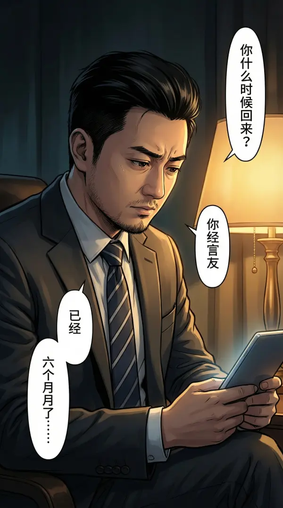
"你什么时候回来？已经六个月了……"
"快了。别让任何人知道我存在。"
蚕蛹有个姐姐。也是觉醒者。失踪了六个月。
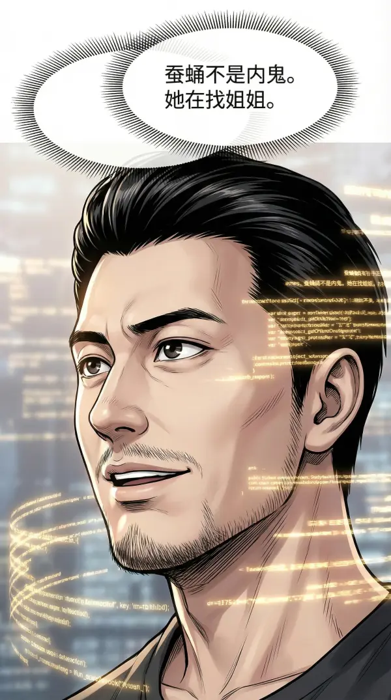
我靠回椅背，长长地呼出一口气。她加入猎人——不是为了出卖我们。是为了找姐姐。
蚕蛹不是内鬼。
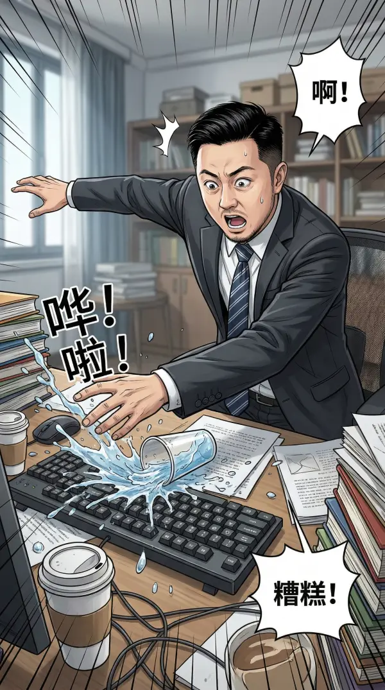
破解成功的成就感让我下意识地伸了个大懒腰——
哐当。
胳膊肘撞翻了桌上的水杯。水泼在键盘上。
代码视界自动激活——
我"看到"了水珠在键盘缝隙中流动的微观数据：表面张力系数、毛细管效应参数、水分子扩散速率……完全没用。这个异能的性价比真的让人想退货。
蜜 罐 · 布 局
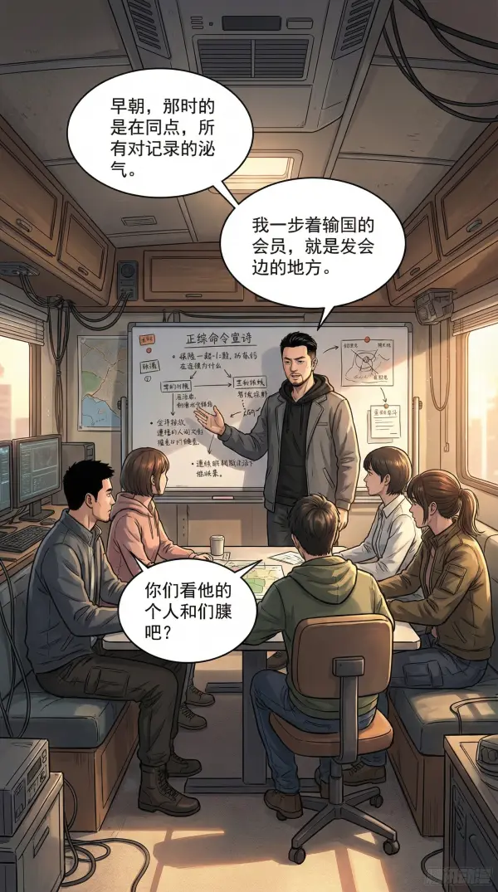
上午，老陈的移动指挥中心。阳光从车窗照进来，照在六张表情各异的脸上。
我站在白板前，环顾一圈。今天的会议有两个议程。一个是说出来的，一个是藏在心里的。
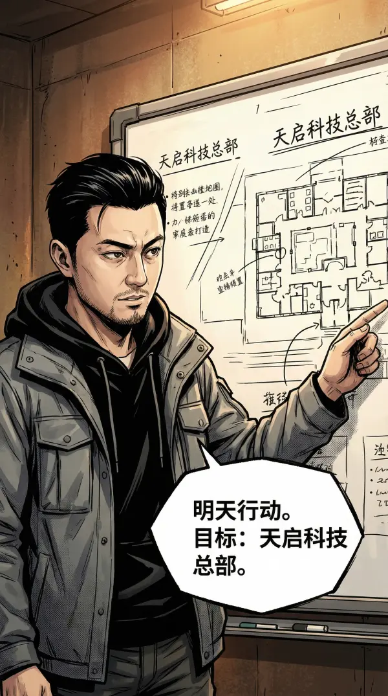
"明天行动。目标：天启科技总部。"
我用红笔在白板上画出大楼的轮廓。但真正的目标——是在座的某个人。
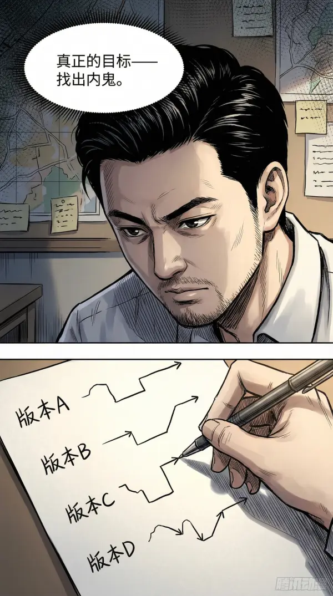
我设计了一个陷阱。
四个版本的行动计划。进入楼层不同，时间不同，路线不同。分别口头告诉不同的人。如果天启做了针对性部署——对比哪个版本泄露了，就知道谁是那条蛀虫。
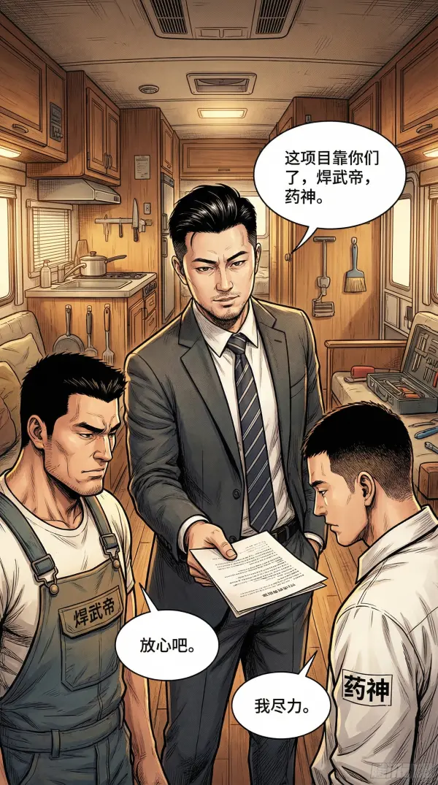
焊武帝和药神拿到的是版本A——3楼，下午2点，北侧消防通道。
我说得很自然，像是随口分配。但每个字都是算计。
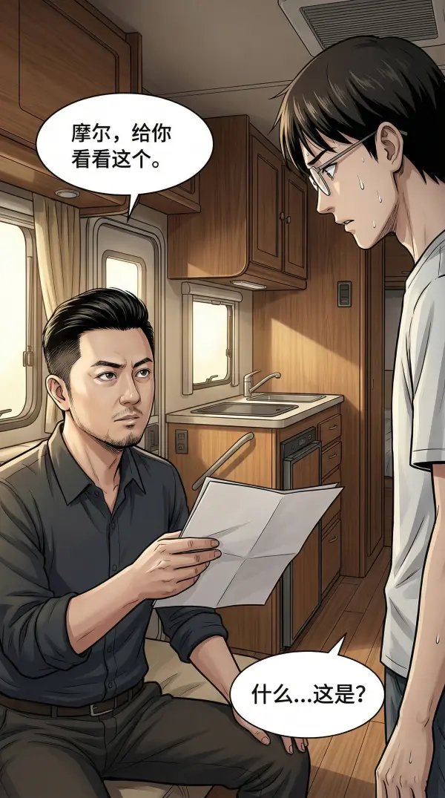
摩尔拿到版本B——5楼，下午3点，地下车库。
他推了推眼镜，目光里有一丝犹豫。犹豫是正常的。我不会因为犹豫就怀疑一个人。
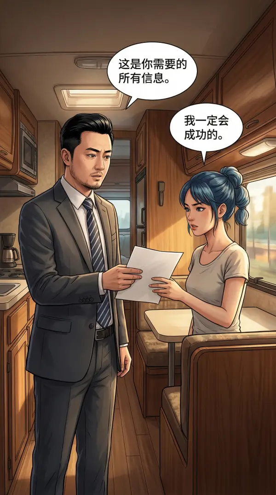
蚕蛹拿到版本C——4楼，下午2:30，正门。
她接过纸条，眼神坚定。我已经知道她的秘密了。但她不知道我知道。
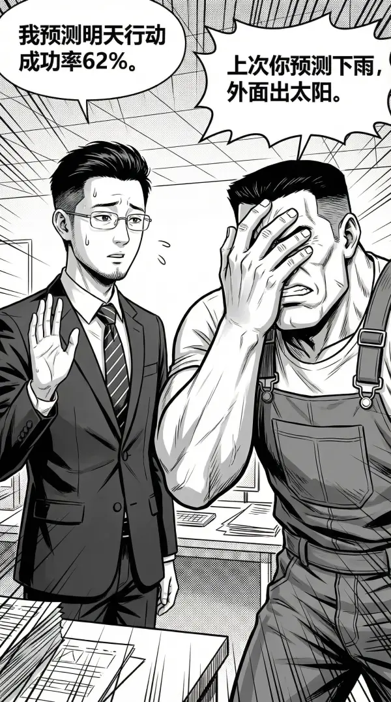
摩尔突然举手："我预测明天行动成功率——62%。"
焊武帝："上次你预测下雨，外面出太阳。"
摩尔弱弱地缩了缩脖子。
"我的能力在进步……准确率从去年48%提升到了53%……"
药神轻声补刀："比掷硬币好那么一丢丢。"
全场没忍住。连蚕蛹都笑了。
暗 涌 · 第 三 次
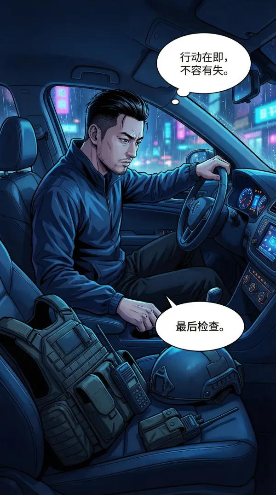
行动前夜。
我坐在车里检查装备，城市的灯光在挡风玻璃上流淌。明天就是正日子了。紧张吗？有一点。但更多的是——期待。
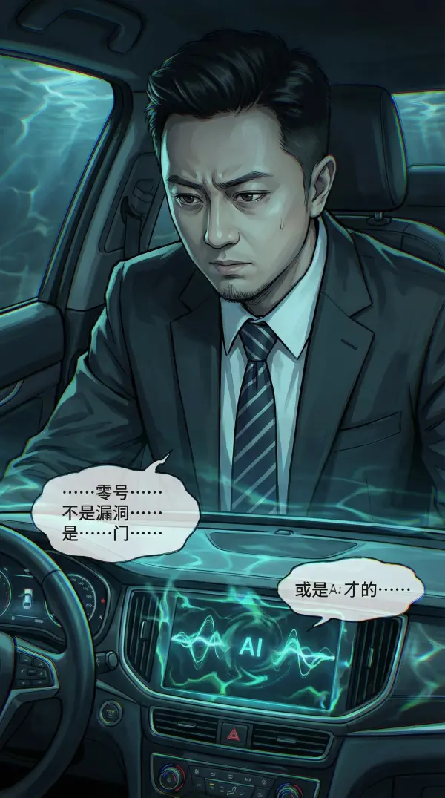
车载AI突然自己播了一段音频——
不是音乐。是一段人声。模糊、像是从水底录制的。
"……零号……不是漏洞……是……门……"
三秒。然后消失。播放记录里——什么都没有。
仪表盘上的温度数字在跳。不是温度在变——是数字本身在变。
28.3 → 21.4 → 15.0 → 18.7
转换成字母表……2-21-15-18……BOOR？ROUB？什么意思？
算了。明天行动要紧。
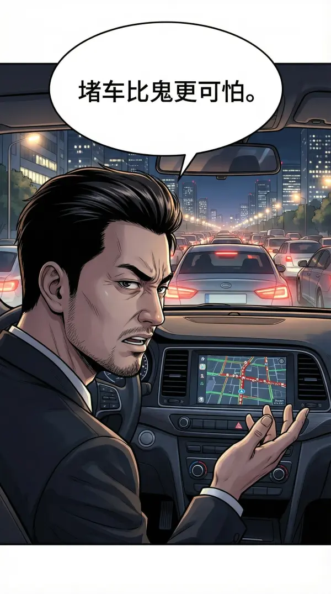
我对着仪表盘说："如果你是个AI，给我导航一条不堵的路。要是你是个鬼——"
"也导航一条不堵的路。堵车比鬼更可怕。"
导航系统回应："已为您规划最优路线。预计到达47分钟。"
正常得不能再正常。就很烦。
突 入 · 天 启 科 技
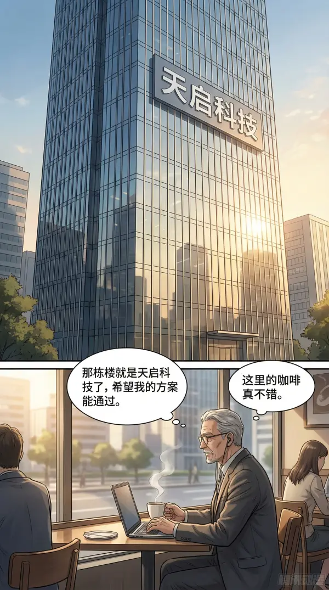
行动日。下午。
天启科技总部在浦东陆家嘴，玻璃幕墙反射着阳光，像一把插在城市里的剑。
信号塔在200米外的咖啡馆坐定，戴上耳机，闭眼——开始"听"。
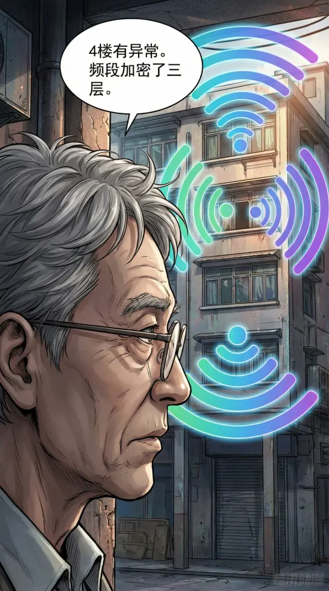
"4楼有异常。"耳机里传来信号塔苍老但稳定的声音。
"频段加密了三层，像军用级别。正常企业不会这么做。"果然。4楼和5楼之间，藏着什么。
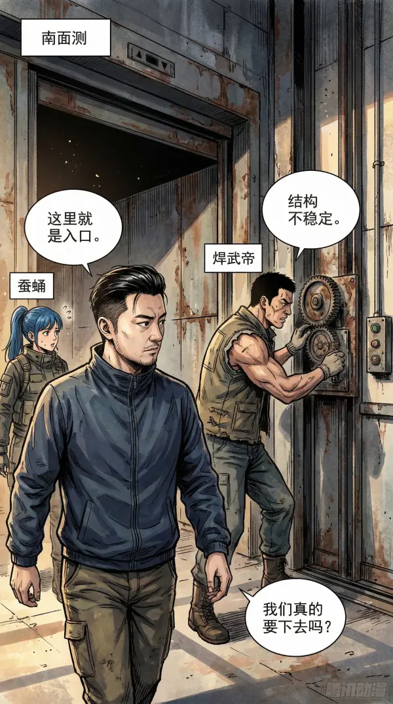
南侧货梯。我带队潜入。
焊武帝走在前面，手掌贴着墙壁，像是在"读"这栋建筑的骨骼。
蚕蛹在后方警戒，蓝色的马尾辫在暗处微微晃动。
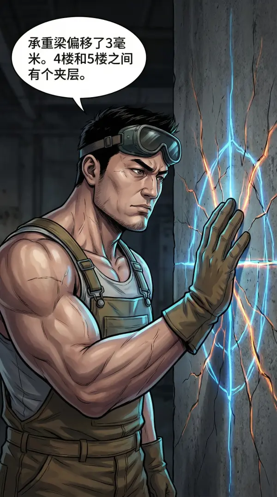
焊武帝突然停下，手掌按在一面墙上。
"承重梁偏移了3毫米。"他低声说，眼中闪过应力分析的光。
"这栋楼改造过——4楼和5楼之间，有一个夹层。图纸上没有。"
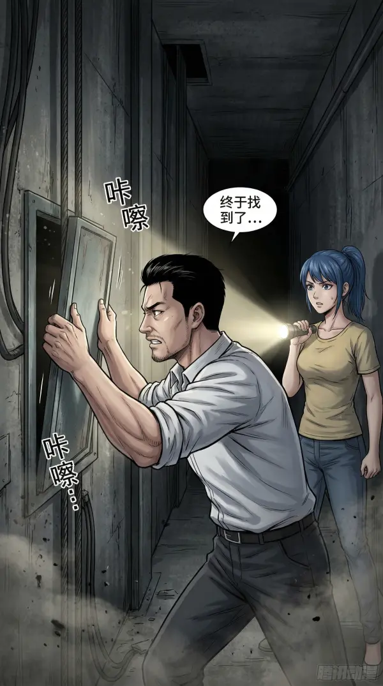
焊武帝一拳一拳地撬开了电梯井道里的隐藏面板。
面板背后——一条冰冷的走廊，向着黑暗深处延伸。
冷气扑面而来。像是走进了冰箱。
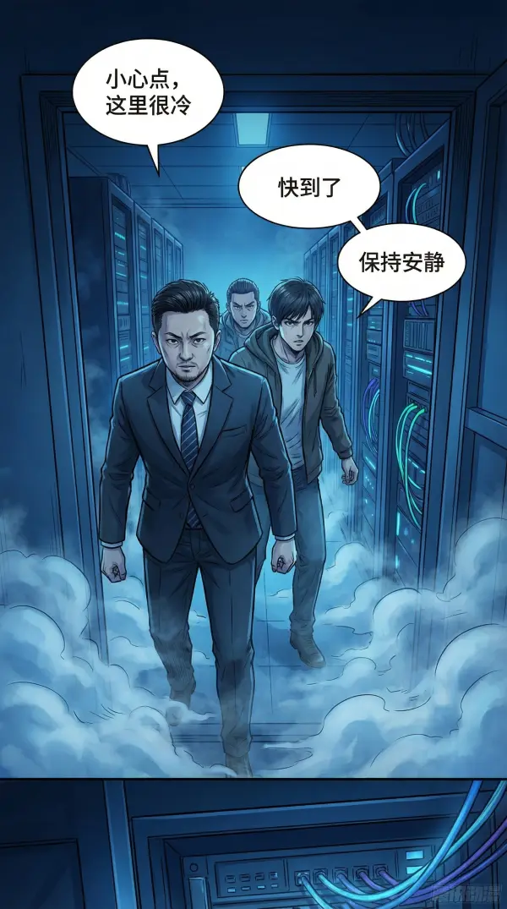
我们走进夹层。
温度骤降。呼出的气变成白雾。
走廊尽头，蓝色的LED灯光隐约可见——像深海里的水母。我知道前方不简单。但我没想到会是这样。
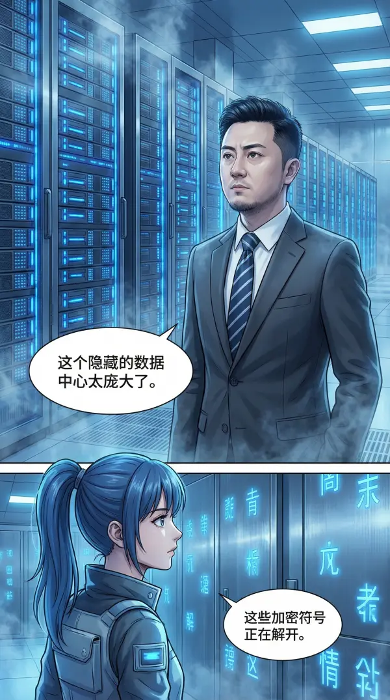
一个隐藏的数据中心。
几十台服务器整齐排列，无人值守。蓝色指示灯在黑暗中像星辰。
蚕蛹的异能自动激活——墙壁上浮现出层层叠叠的加密标识，像是暗语写成的地图。
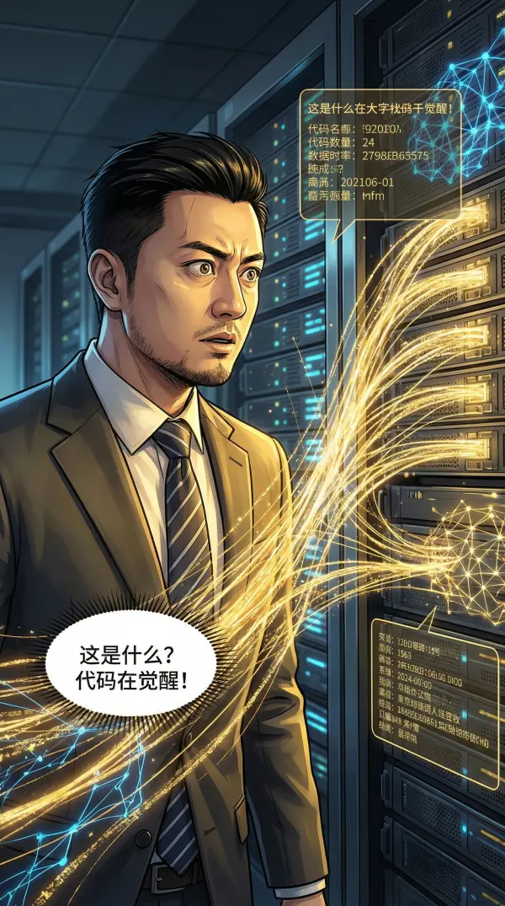
我激活代码视界。
金色的数据流从每台服务器中涌出，在空气中交织成网。不对。这些数据的结构——不像是在处理普通数据。
它们像……大脑的神经网络。
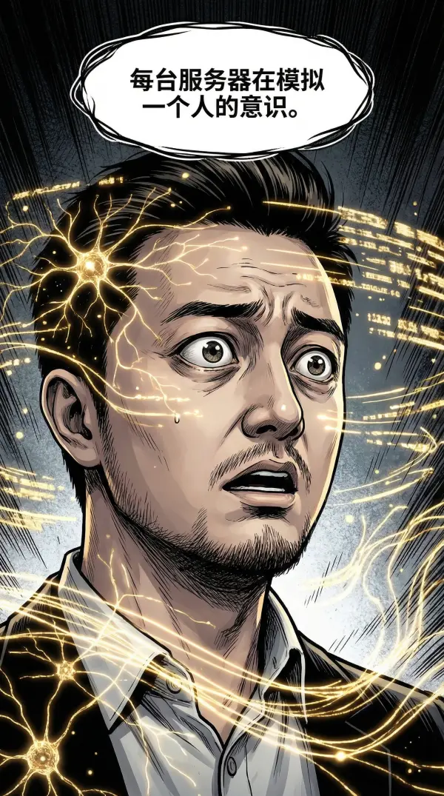
每一台服务器——都在模拟一个人的意识。
不是AI。不是程序。是真实的、完整的人类意识。被提取出来，关在这里。
我感到一阵恶寒从脊椎升起。
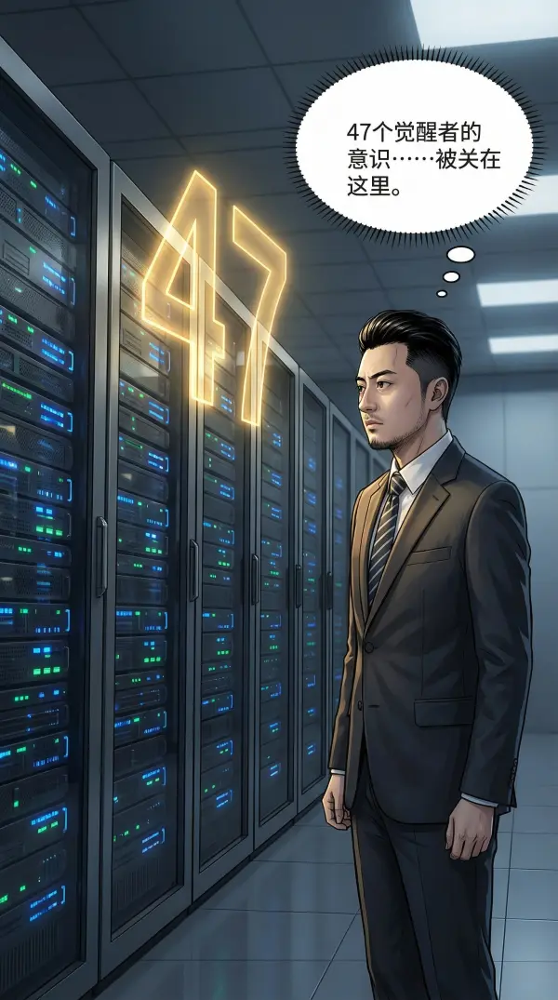
我数了一下。
47台。
47个觉醒者的意识——被关在这些冰冷的铁盒子里。我找到了那些"消失"的觉醒者。他们没有死。他们活着。以另一种方式。
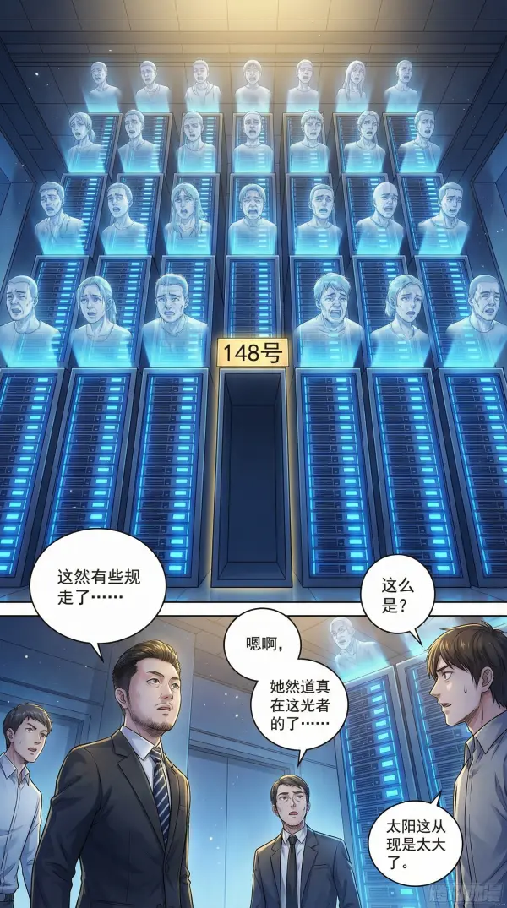
每台服务器上方，浮现着一个半透明的人影——被困意识的投影。
他们的表情是凝固的，像永恒的屏保。有人惊恐，有人平静，有人……在微笑。
中间有一个空位。编号——148。
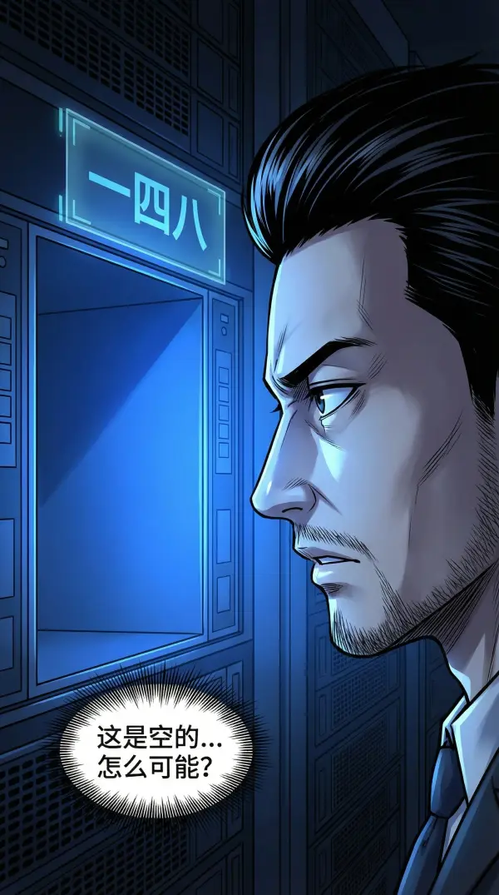
我走到148号服务器前。
它是空的。没有意识运行。没有半透明的投影。
但它的指示灯——在闪。像是一颗跳动的心脏。在等待。在等谁？
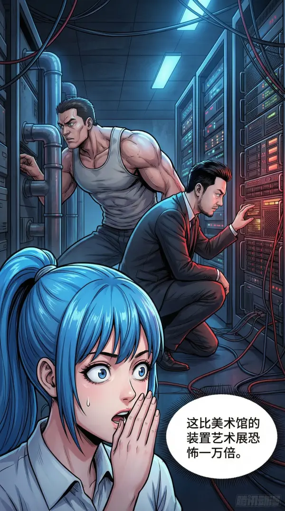
蚕蛹凑到我身边，压低声音："这比美术馆的装置艺术展恐怖一万倍。"
身后传来焊武帝的声音——他正蹲在一台服务器旁边，仔细看散热管路。
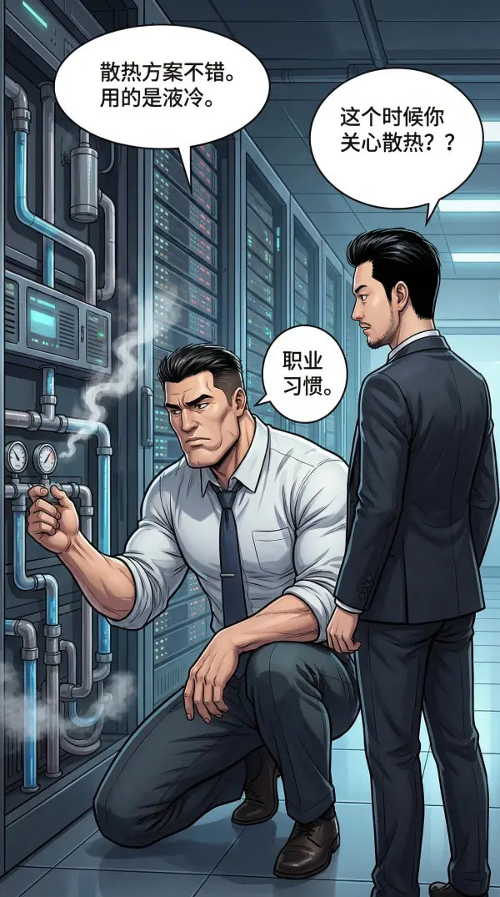
"散热方案不错。用的是液冷。"
我转过头，不可思议地看着他："这个时候你关心散热？？"
焊武帝一脸认真地耸耸肩："职业习惯。"
蜜 罐 · 收 网
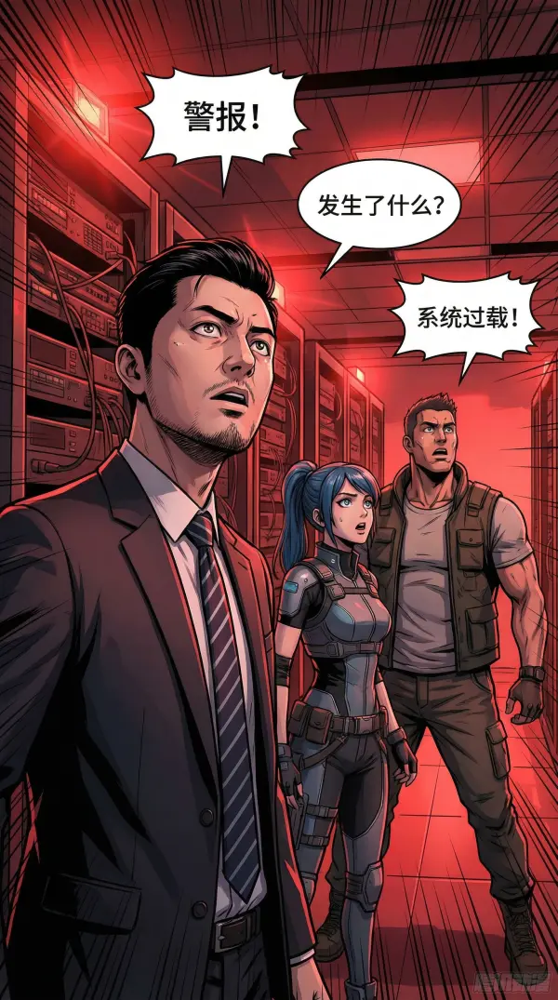
突然——
警报响了。
刺耳的蜂鸣声在服务器机房回荡。红色闪灯疯狂旋转。
天启科技的安保——来了。
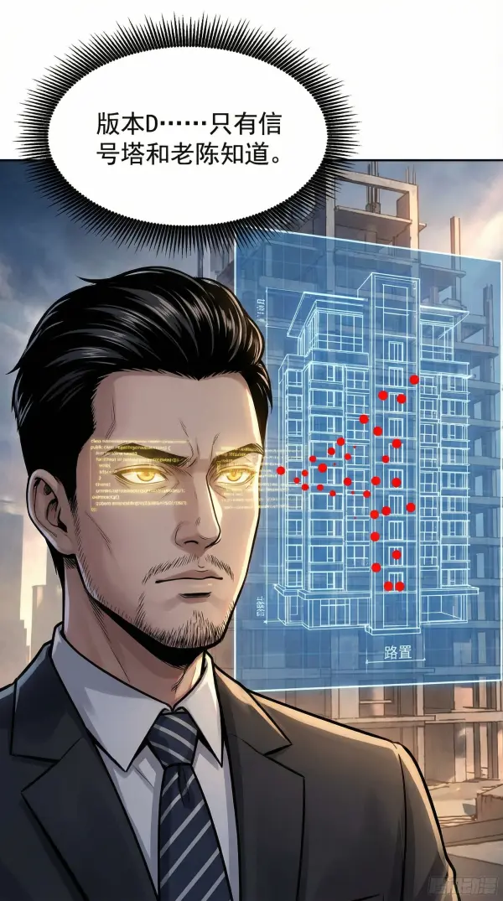
我立刻激活代码视界。建筑蓝图的金色全息投影展开——
安保团队的红色光点正在向我们合围。
他们封锁的位置是——南侧货梯。4楼。版本D。只有信号塔和老陈知道的方案。
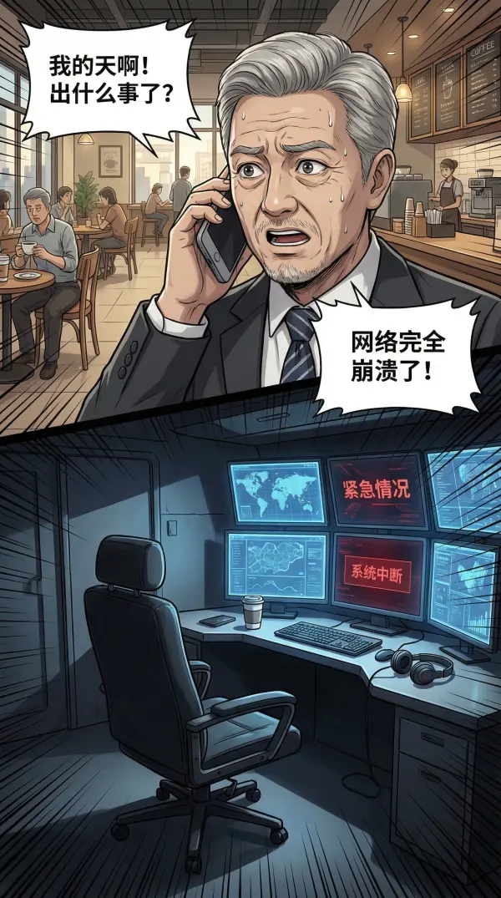
代码视界切到一楼咖啡馆——信号塔在那里，正惊慌地打电话。他是在给我们报警。
那排除了信号塔。
切到移动指挥中心——空的。显示器亮着。椅子歪着。老陈——消失了。
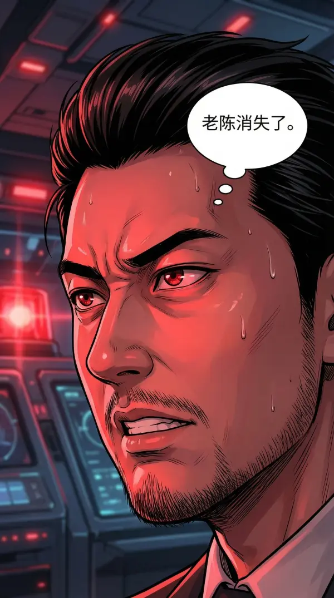
老陈消失了。
我咬紧牙关。红色警灯在脸上一闪一闪。他和我们一起吃过饭，一起笑过，一起讨论过行动方案。但他——是那条蛀虫。
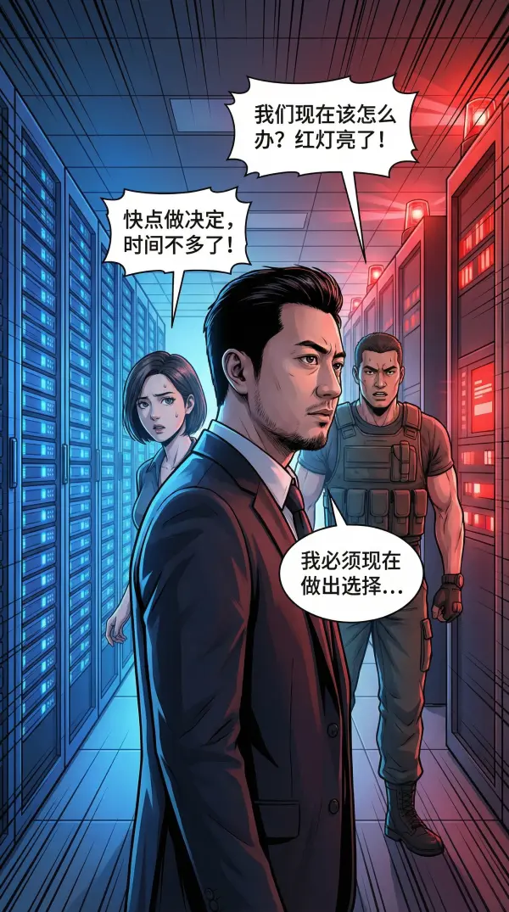
蓝色和红色的光，从两个方向照在我身上。
左边——47个被困的灵魂。右边——逼近的安保。
蚕蛹和焊武帝都在看着我。等我做决定。
决策点 D5 — 被困夹层，47个觉醒者的意识就在身边
A. 优先救人。尝试用代码视界找到服务器的"释放"接口，哪怕只能救一个。
B. 优先撤退。活着出去才能救更多人。带走硬盘数据作为证据。
C. 让蚕蛹和焊武帝先撤，自己留下。用代码视界干扰安保系统争取时间。
菩萨心肠说"救"，但黑客本能说"别冲动"。活着出去，带走证据，才能彻底端掉这个地方。冲动救一个人，可能害死所有人——包括自己。
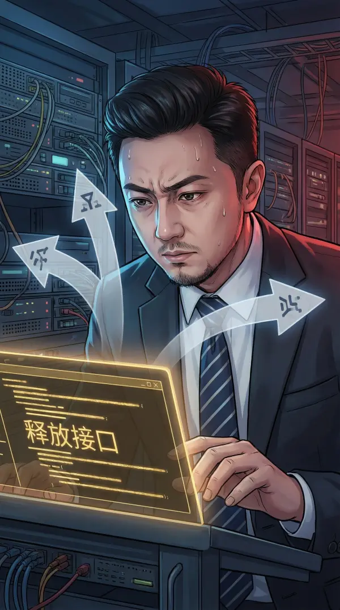
"带上硬盘数据，撤！"
我的手在服务器终端上飞速操作，代码视界全力运转——十五秒内拷完核心日志。我会回来的。我向你们保证。
惊 变 · 第 148 号
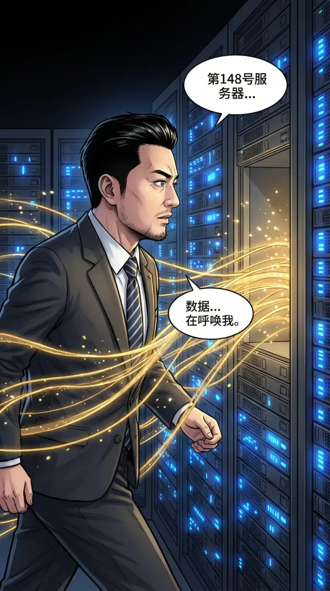
但在撤离前——我的脚步不由自主地走向了148号。
空空的服务器，指示灯节奏性地闪烁。
数据接口向我伸出触手般的金色数据流。它在试图连接……我的意识。
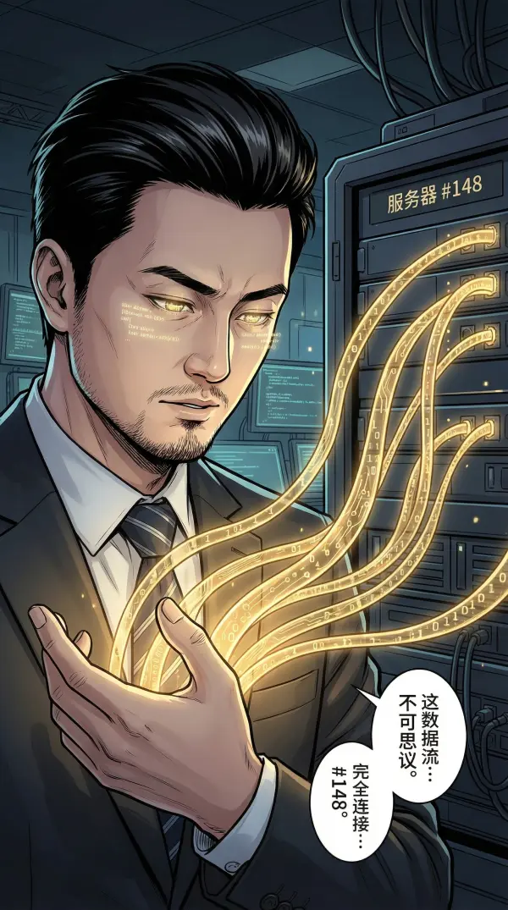
金色的数据触手轻柔地缠绕向我的手。
代码视界全力运转，眼前的一切都变成了金色。像是有什么东西在我血液里回应。在共振。
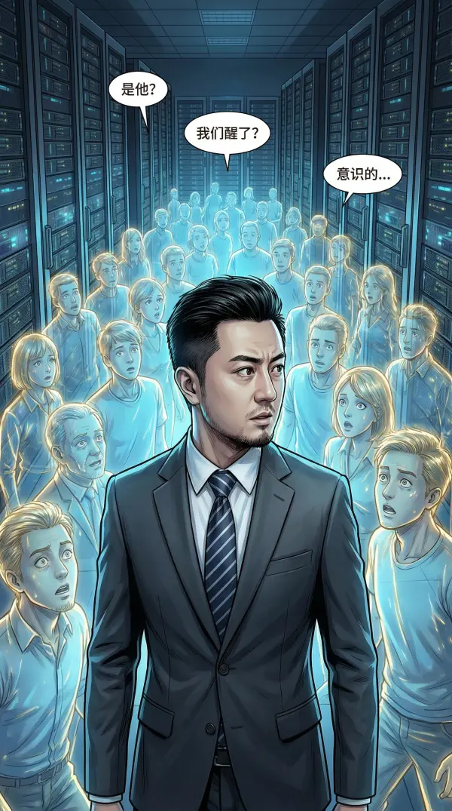
47个半透明的身影——同时转过头来。
凝固的表情开始融化。有的睁开了眼睛。有的张开了嘴。
他们看到了我。不，他们一直在等我。
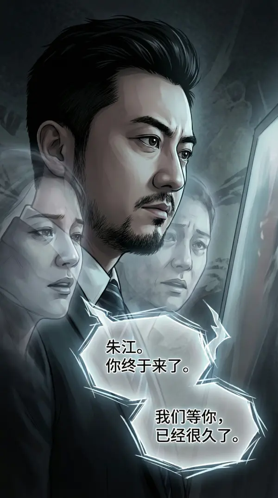
47个声音同时响起，低沉、模糊，像是从水底传来：
"朱江。你终于来了。"
"我们等你，已经很久了。"
"零号漏洞不是漏洞。它是门。而你——是钥匙。"
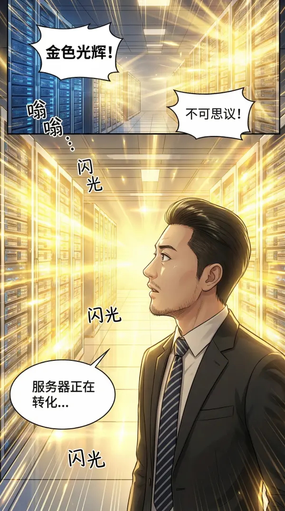
47台服务器的蓝光——突然变成了金色。
和我的代码视界一模一样的颜色。
整个数据中心被金色的光芒淹没，像是太阳从地底升起。这不可能。除非……
决策点 D6 — 47个被困意识要求我"打开门"
A. 放手上去。如果我是钥匙，那我有责任打开这扇门。
B. 拒绝。不了解后果就行动是赌博，不是勇敢。
C. 问他们："门打开后会发生什么？"获取更多信息。
D. 先验证真伪。问一个只有真正觉醒者才知道的问题——不信任未验证的输入。
黑客的第一原则：不信任未验证的输入。47个声音说得天花乱坠，但这也可能是天启科技的蜜罐——用来捕获更多觉醒者的。在确认对方身份前，不冒险。
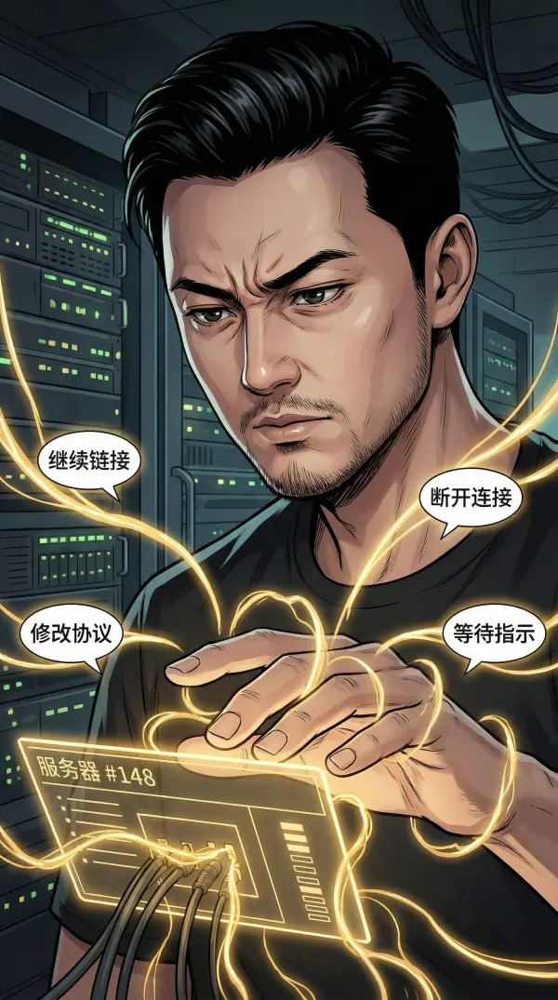
我后退一步，手悬在半空。
"如果你们真的是觉醒者，告诉我——第一个觉醒的人，看到的第一个画面是什么？"
这是一个没有标准答案的问题。但一个真正的觉醒者，会给出只有觉醒者才能理解的回答。
三 十 秒
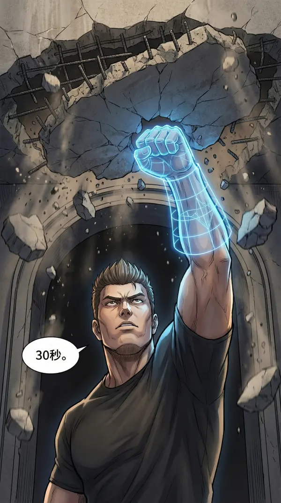
他们还没来得及回答——安保破门了。
焊武帝一拳砸在天花板的承重弱点上。轰——局部坍塌，碎石挡住了入口。
"30秒。"
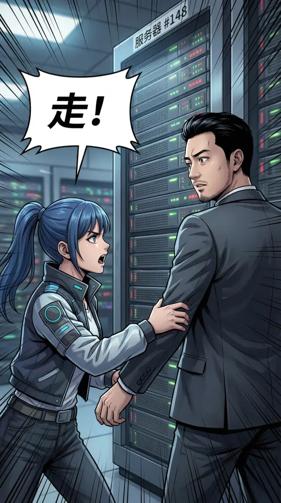
蚕蛹抓住我的胳膊，用力往后拽："走！"
我回头看了一眼148号服务器。金色的数据触手在空气中颤抖，像是在挽留。
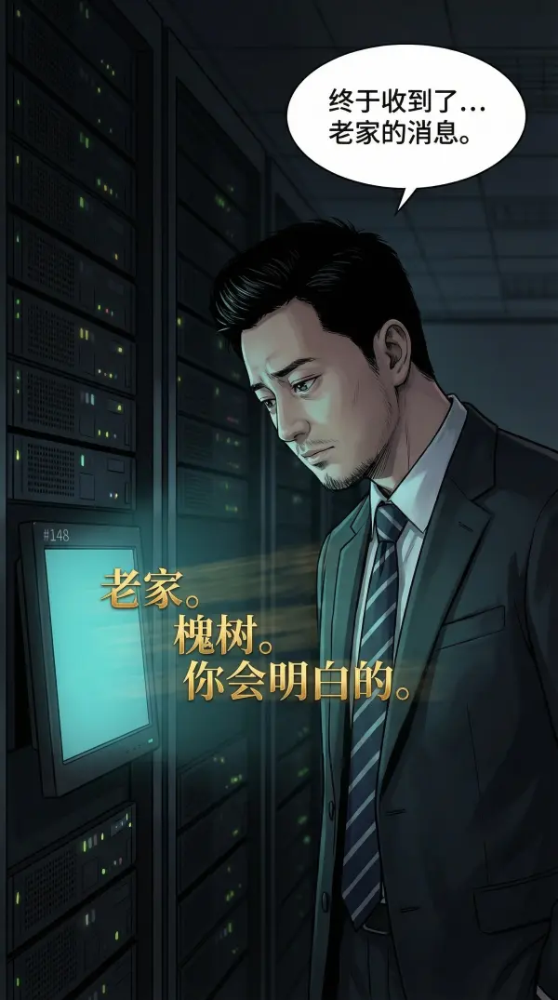
148号服务器的屏幕上，滚过最后一行文字：
"老家。槐树。你会明白的。"
和147号觉醒者短信里说的……一模一样。
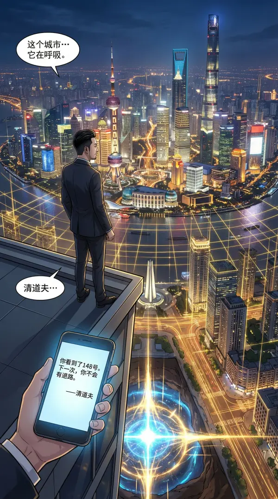
我们从焊武帝找到的结构弱点处破墙撤离。
城市的夜色中，我的代码视界没有关闭——整个上海的数据层在我眼中缓缓浮现。
零号漏洞在城市底层……它在发光。在呼吸。
手机震动。未知号码：
"你看到了148号。下一次，你不会有退路。——清道夫"
—— 第三章 · 完 ——
下一章预告：
老家。那棵槐树下，埋着什么？
老陈消失了——他去了哪里？
47个意识说的"门"，究竟通向哪里？
而148号服务器……为什么等的是我？
第四章：老槐树
——敬请期待——